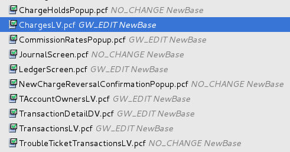
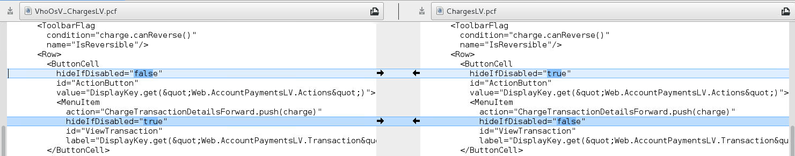

Handling changes to the configuration during an upgrade
This topic describes how to handle changes to the customized configuration during the configuration upgrade process.
Process overview
- You run upgrade steps. A temporary directory is created.
- You launch Merge Tracker and then merge and resolve files. In the meantime, the customized configuration changes.
- You run the upgrade steps again. The existing temporary directory is deleted and then a new one is created.
- You go back to merging and resolving files in Merge Tracker.
You may need to repeat steps 3 and 4 because the customized configuration can change multiple times during the upgrade process.
Tools
The InsuranceSuite Configuration Upgrade Tools allow you to run upgrade steps again without losing your merging progress. Each configuration file in the upgraded customized configuration has a status file that contains a CRC32 checksum of the file content. The status files are located outside the temporary directory. When you launch Merge Tracker, it compares the checksums in the status files with current checksums. If the Unresolve file when changes in upgraded customized configuration are detected is enabled in Merge Tracker settings, all the resolved files that changed are unresolved automatically and tagged as changed-after-resolution in Merge Tracker. For more information on status files, see Merge progress tracking.
Optionally, you can add the temporary directory to a version control system, such as Git, to have more control over changes made to the customized configuration. When files in the temporary directory are tracked, you can identify changes that happened between subsequent runs of upgrade steps.
Example
- Run the upgrade command. The temporary directory is created in the target environment.
- Go to the target environment and add the tmp directory to
Git.
git init git add tmp git commit -m 'Upgraded configuration initial version' - Run Guidewire Studio in the target environment. When it starts, open Merge Tracker.
- Merge and resolve files as needed. The files are marked as
Resolved in Merge Tracker.
 - After changes are made in the customized configuration, run the upgrade command with the --mode clean parameter to delete the existing temporary directory and create a new one.
- Open Merge Tracker. All the resolved files that changed in the customized
configuration are automatically unresolved and tagged as
changed-after-resolution.

- If you want to merge a file with the changed-after-resolution tag, see Merging and resolving modified files from Merge Tracker.
- If you want to get more information about the changes in the temporary directory, run
the following Git commands.
- git status
- Lists all changed
files.
On branch master Changes not staged for commit: (use "git add <file>..." to update what will be committed) (use "git checkout -- <file>..." to discard changes in working directory) modified: tmp/cfg-upgrade/modules/configuration/config/web/pcf/accounting/ChargesLV.pcf - git diff
- Shows changes made to
files.
--- a/tmp/cfg-upgrade/modules/configuration/config/web/pcf/accounting/ChargesLV.pcf +++ b/tmp/cfg-upgrade/modules/configuration/config/web/pcf/accounting/ChargesLV.pcf @@ -80,12 +80,12 @@ name="IsReversible"/> <Row> <ButtonCell hideIfDisabled="false" hideIfDisabled="true" id="ActionButton" value="DisplayKey.get("Web.AccountPaymentsLV.Actions")"> <MenuItem action="ChargeT ransactionDetailsForward.push(charge)" hideIfDisabled="true" hideIfDisabled="false" id="ViewTransaction" label="DisplayKey.get("Web.AccountPaymentsLV.Transaction")"/> </ButtonCell> - git difftool
- Shows changes made to files in the default diff tool from the Git
configuration.
